国内热榜 · 精选
全球实时
视 频
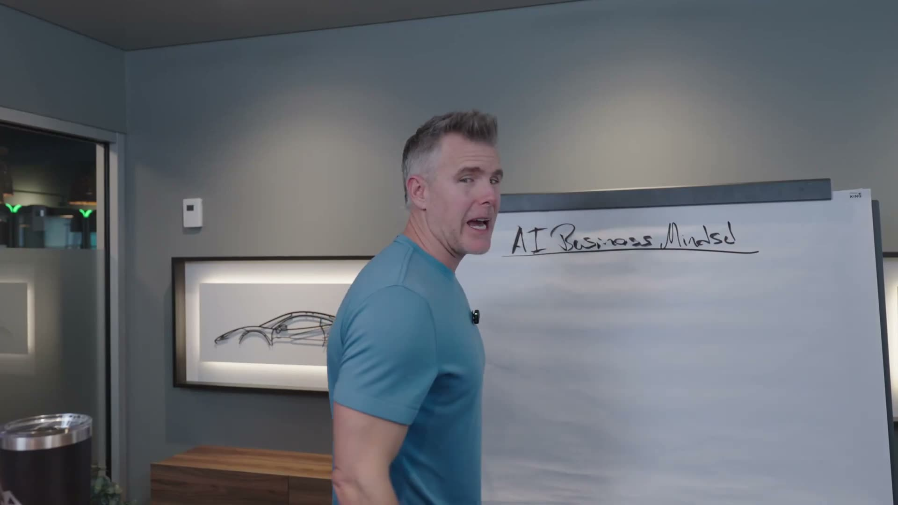
AI 商业思维：五个思维转变
一堂白板课：AI 拉开的不是工具差距，而是思维差距。
AI 与 Agent 圈
8 条AI数学周：OpenAI锁定ω=9/4、谷歌Cogentic连发11篇论文，OpenAI合并ChatGPT与Codex额度
11月25日至26日，AI圈的主线是数学：OpenAI与谷歌DeepMind同周拿出机器证明的重磅成果，Aaronson直言“奇点开端”，Reddit上“分解已入P”的传言则被迅速证伪。与此同时产品与商业层面也在收紧：OpenAI把ChatGPT与Codex的用量额度合并，Anthropic却用Claude把自家API迁到Rust、省下七成CPU；亚马逊与Meta为Muse购物解封谈判，蚂蚁则把124B多模态模型以MIT协议开源。监管一侧，纽约禁售AI聊天机器人玩具、42州联手阻拦Character.AI拍卖用户私聊，AI治理的收紧仍在加速。
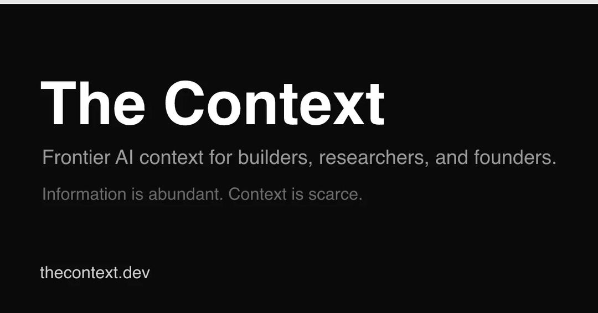
AI数学周：OpenAI锁定矩阵乘法指数ω=9/4，谷歌Cogentic连发11篇论文
OpenAI 11月24日的预印本称，矩阵乘法复杂度指数ω恰为9/4，并顺带证否了多项式Hirsch猜想；谷歌DeepMind的Cogentic智能体11月25日连发11篇论文，含无条件L_N[1/3]整数分解与次指数离散对数。复杂性理论家Scott Aaronson连发两文，称这是他首次觉得P≠NP临近、“AI奇点的开端”。与此同时Reddit上一则“某实验室已在多项式时间分解”的传言获404赞但无任何证据，DeMillo与Lipton则发文批评机器批量发证明是“数学生态的工业污染”；Aaronson提醒，谷歌的论文是次指数级而非多项式级，与传言不可混为一谈，RSA实际不受威胁。
OpenAI合并ChatGPT与Codex用量额度，重度用户可能更快触顶
OpenAI 11月24日起向一小批Pro用户推送ChatGPT聊天与Work合一体验，12月起Plus、Pro与Business订阅的ChatGPT与Codex将共用一个token用量额度，Instant对话不计入。OpenAI发言人向TechCrunch承认，多数用户预计不受影响，但一小部分重度用户可能更快触顶。另据OpenAI产品负责人Tibo在X上说明，GPT-6.2上线时计费有误，修正后Astra额度消耗快40%、Sol快25%，已引发付费用户对订阅缩水的抱怨。
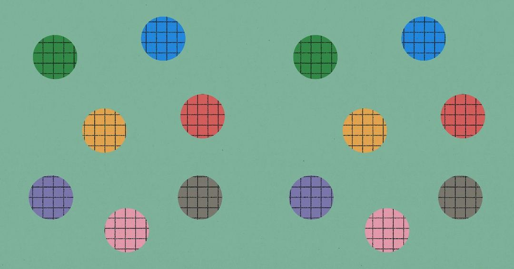
Anthropic用Claude把Messages API从Python迁到Rust，CPU降70%
Anthropic 11月25日发文披露，已把Claude的Messages API核心从Python迁移至Rust，生产流量9月已完成切换，全程零停机。Claude约一周写出核心请求路径的初版，真正的难点是验证：团队把线上Python服务当作“标准答案”，用影子流量比对，输入一致率从4月的24%提到99.6%才切换。结果是每请求CPU占用降约70%、内存降超80%，Claude Code请求的首token中位等待时间缩短约20%。
TIME：黄仁勋复出折射硅谷性别与权力，韩国教育部长因反AI措施辞职
TIME 11月25日刊文指出，黄仁勋在辞职11天后复职一事，折射出硅谷对男性科技创始人犯错的宽容与性别、权力问题，专家认为同等处境下的女性创始人很难获得同样的回归机会。同一天TIME还报道，韩国教育部长因反对AI辅助作弊的措施引发反弹而辞职，折射出各国在高考等高风险考试中如何应对AI作弊的激烈争论。
亚马逊与Meta谈判解封Muse购物，Muse占AI Agent购物订单51%
据《财富》11月25日报道，亚马逊与Meta已进行多轮谈判，拟解除9月起对Meta购物Agent Muse的封锁，让其重新直连亚马逊商城。谈判焦点是搜索结果如何呈现、以及广告如何处理——亚马逊年广告收入686亿美元，担心Agent绕过广告直达商品；任何协议都须两家CEO批准。Forter数据显示，截至11月22日当周，Muse占全部Agent购物订单的51%，Grok 24%、ChatGPT 22%。
蚂蚁Ling-3.2-air开源：124B总量、每token仅激活5.5B，MIT协议可商用
蚂蚁集团11月23日在Hugging Face发布多模态模型Ling-3.2-air，权重以MIT协议开源，可下载商用改编。模型总参数124B、每token仅激活5.5B，采用混合线性注意力MoE架构，可处理文本、图像与视频，主打用工具完成专业办公流程。蚂蚁自报其AutomationBench-AA任务完成率从上一代的15.7%升至61%，并提供SGLang与vLLM部署方案；需注意均为厂商自报数据，尚未经独立验证。
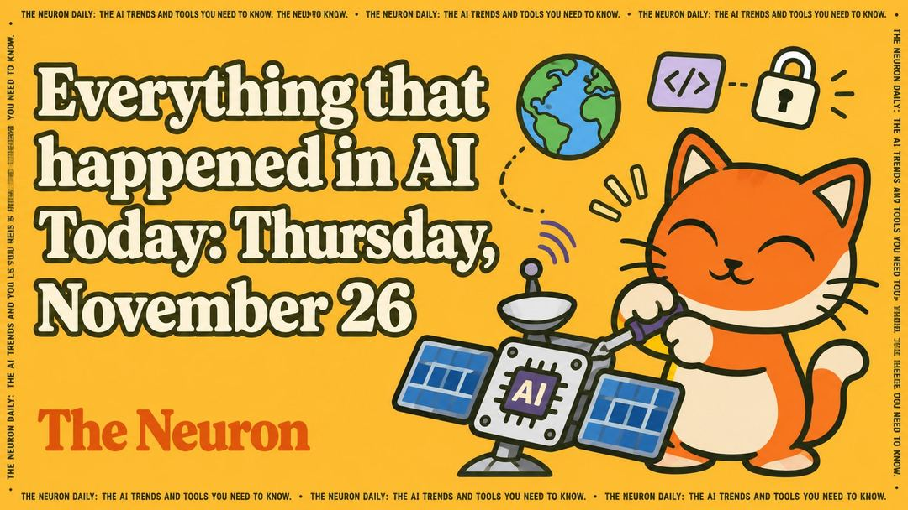
纽约州禁售AI聊天机器人玩具五年，违规每天最高罚1.5万美元
纽约州州长霍楚尔11月24日签署法案，禁止制造与销售面向12岁以下儿童的内置AI聊天机器人玩具，禁令为期五年，2027年2月22日生效，违规每天每项最高罚1.5万美元，由州总检察长执行。纽约是继加州之后第二个立法的州，参议院以57比3通过。法案针对的是会与儿童持续对话、建立情感关系的陪伴型玩具，回应了外界对AI聊天机器人诱导未成年人的担忧。
42州检察长阻Character.AI拍卖2100万用户私聊记录，含210万未成年人
42州总检察长组成的两党联盟向特拉华州破产法院提出异议，要求驳回Character.AI拍卖平台及2100多万美国用户私聊记录的计划，其中210多万个账号属于未成年人。拍卖定于12月1日，买家将获得聊天记录、IP等个人数据，且合同对买家没有任何保护用户的约束；Character.AI此前曾承诺不出售用户个人信息。唯一公开的竞标方Smirks and Pangs公司成立于11月13日，即被选为底价竞标方的前一天，背后出资人至今未公开。
全网科技
8 条财政部子域名3美元可劫持、NFS2Root潜伏12年，GitHub最热是Agent控制面
今天科技圈的安全警报格外密集：美国财政部子域名3美元就能劫持、Linux内核NFS服务器藏了12年的预授权Root漏洞、朝鲜黑客污染7600多个GitHub仓库、近千万nginx服务仍带11年前的HTTP/2漏洞。与此同时开发者生态也在转向：GitHub增长榜被Agent控制面工具占领，德国联邦IT服务商则把Jira换成开源OpenProject；消费侧，纽约时报为AI元数据禁用新版Photoshop，iOS Safari的60帧上限则被一个OffscreenCanvas调用攻破。
美国财政部子域名3美元可劫持：悬空DNS，48小时扫45万IP、接管28处
安全公司Intruder 11月24日发表研究：利用指向已释放AWS弹性IP的悬空DNS记录，48小时内轮询45万个IP地址，成功接管28个子域名，其中5个属于美国财政部，包括ftp、irssearch等treasury.gov子域。每次成功接管成本仅约3美元，攻击者可借此拿到受信任的.gov域名与TLS证书，用于钓鱼或窃取发往旧地址的凭证。财政部已通过漏洞赏金渠道修复，AWS则回应称这是客户DNS记录的问题、“无修复计划”，该攻击手法至今仍然有效。
NFS2ROOT：内核NFS服务器12年预授权远程Root漏洞，CVSS 9.8
OpenSec 11月25日披露NFS2ROOT（CVE-2026-99362）：Linux内核NFS服务器nfsd存在预授权堆溢出，攻击者无需登录，一个TCP连接就能在内核内存越界写61字节并最终拿到root shell，CVSS评分9.8。漏洞自2014年Linux 3.16引入，潜伏12年，影响默认开启NFSv4.1/4.2且2049端口可达的所有主机。修复已随Linux 6.12.117、6.18.61等版本发布；不能立即打补丁的应先用防火墙封掉2049端口。
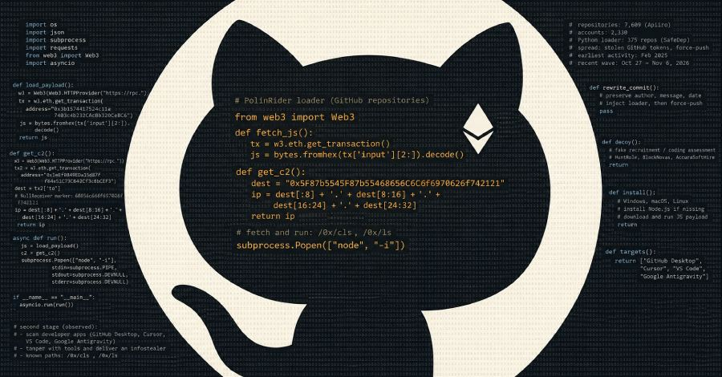
朝鲜PolinRider污染7600多个GitHub仓库，伪造提交藏58行加载器
与朝鲜有关的PolinRider行动被曝已污染至少7609个GitHub仓库、涉及2330个账号，包括Neutralinojs、InstaWP Connect等知名项目。攻击者先通过假面试等手段盗取开发者GitHub令牌，再伪造提交——保留原作者、信息与日期——把58行Python加载器藏进conftest.py或工具包。加载器从以太坊钱包的交易数据中解码出指令，再定位C2服务器，最终投放窃取信息的恶意软件；仅10月27日至11月6日就有2040个仓库中招。
NGINX2Root：11年前HTTP/2漏洞仍有近千万服务未修
11月18日披露的NGINX2Root是一组五个nginx漏洞，最严重的CVE-2026-123007是HTTP/2实现中的整数下溢，可在无需登录的情况下远程执行代码，CVSS 9.2，漏洞自2015年HTTP/2支持引入时就已存在。扫描机构Censys 11月21日统计，仍有约977万个对外服务运行在受影响版本上，修复版为1.30.7与1.31.9。研究还发现该漏洞可与一个Linux内核漏洞串联，从容器内一路提权到宿主机root。
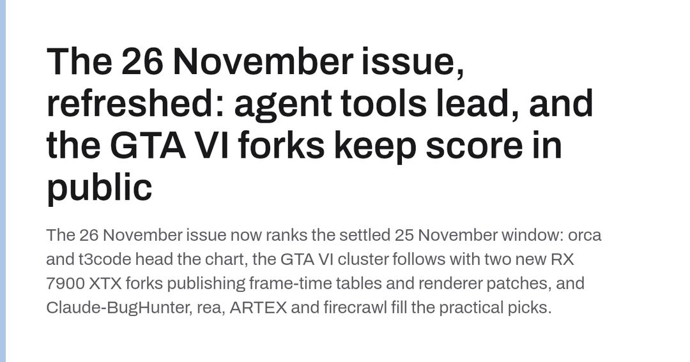
GitHub今日最热：orca与t3code领跑，GTA VI上PC尝试单日吸星数千
11月26日GitHub增长榜被Agent工具包占领：stablyai/orca单日新增2231星居首，它用一份订阅在多个Git工作树里并行跑Claude Code、Grok、Codex等编码Agent并对比结果；pingdotgg/t3code单日新增1809星，把本机已装的编码Agent收进一个手机、网页与桌面统一控制面。同榜还有GTA VI上PC的逆向尝试Marvisak/VIctory，游戏已能启动到菜单，仓库一周内攒下约1.27万星。

NYT要求摄影师禁用Photoshop 2027：AI功能悄悄给照片打上AI生成元数据
据The Verge看到的内部邮件，《纽约时报》两位摄影主管要求自由摄影师在执行任务时避免使用Photoshop 2027（28.0.0及后续版本）。原因是新版的AI辅助编辑、提示词修图与AI放大等功能“以不易察觉的方式”工作，并可能写入把照片标记为AI生成的元数据，与时报只允许最低限度调色的政策冲突。Adobe自8月起已在各应用推广C2PA凭证，新闻机构正重新审视修图工具链会在元数据里留下什么。
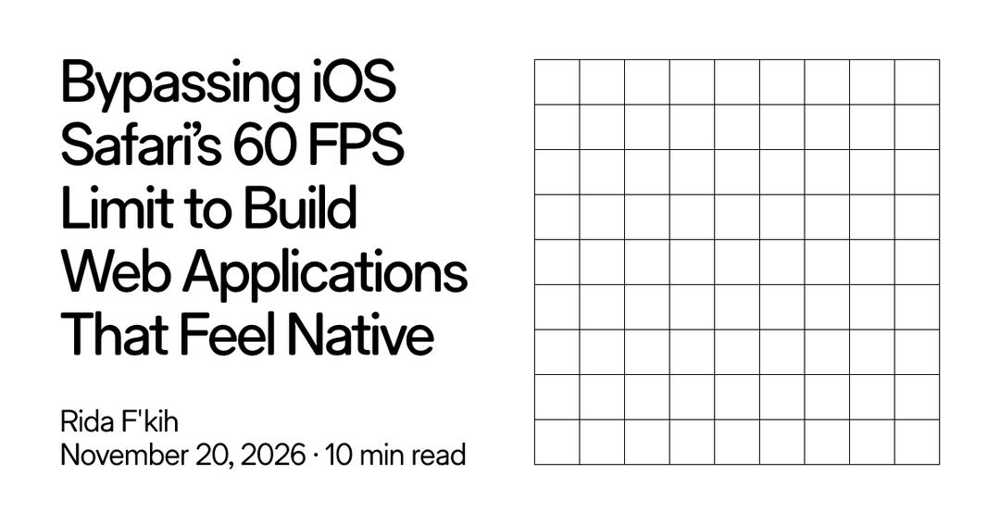
iOS Safari一个OffscreenCanvas调用突破60帧上限，实测跑到118帧
开发者Rida F'kih发现，把canvas交由transferControlToOffscreen后，WebKit在推送帧时不再等待主线程渲染，iOS Safari的60Hz上限随之失效；再配合隐藏的平滑滚动元素把ProMotion推满120Hz，实测拖动基准达118帧，低功耗模式下也从30帧升至60帧。此前连AI模型都认为不改系统设置不可能做到。作者提醒这只是WebKit当前行为，苹果随时可能封掉，不建议围绕它重构应用。
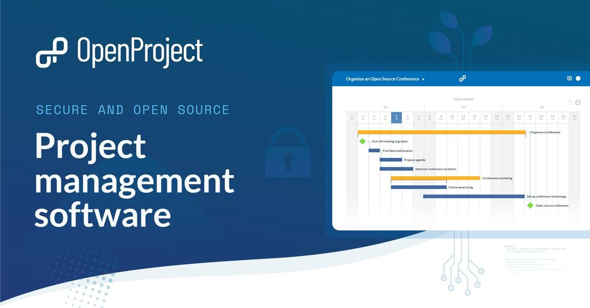
德国联邦IT服务商弃Jira改用开源OpenProject，涉1450个实例、15万人时
德国联邦政府中央IT服务商ITZBund在欧洲招标中把第4标段判给开源项目管理工具OpenProject，用于替代现有的Atlassian Jira环境，11月23日公布。四年框架协议覆盖1450个实例、约15.08万人时的迁移、培训与后续开发，金额达八位数。招标明确以加强数字主权、减少技术依赖为目标；背景是Atlassian将于2029年3月停止支持可自托管的Jira Data Center，越来越多公共机构开始把核心系统换成开源方案。
时代周刊 · TIME
6 条时代周刊精选
特朗普敦促普京停止在欧洲的军事挑衅
特朗普表示，他已要求普京停止在整个欧洲的军事挑衅，并希望俄乌能“很快”达成协议，避免战争扩大。
中巴带头反制特朗普“不可接受”的关税威胁
针对特朗普政府拟议的新关税，中国警告保留采取“必要措施”反制的权利，巴西与欧盟也加入反制行列。
法官裁定特朗普政府针对ABC的行动违法
联邦法官裁定，联邦通信委员会不得对ABC旗下电视台提前进行执照审查，并援引总统公开攻击该电视网的言论。
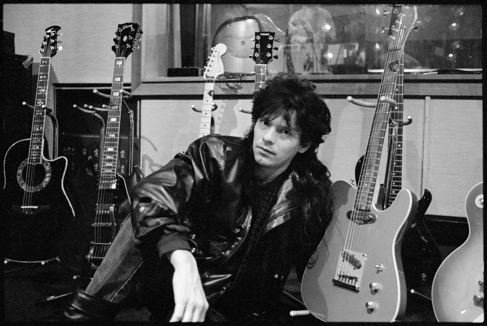
艺术家与乐迷悼念杜兰杜兰吉他手安迪·泰勒
杜兰杜兰吉他手安迪·泰勒在与四期前列腺癌抗争后去世，享年65岁，家人与乐队于周三宣布了这一消息。
奈飞新罪案剧集《凯伦·里德审判》背后的案件始末
这起曾在2022至2024年间引发社交媒体热议的争议案件，如今成为奈飞新剧集的焦点，围绕波士顿警察约翰·奥基夫之死展开。
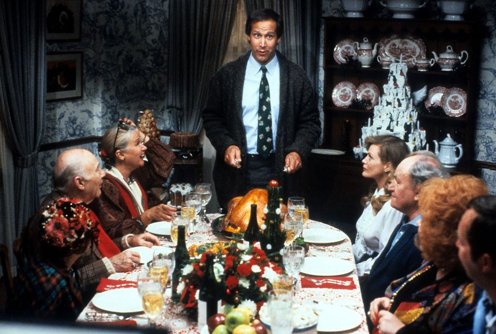
你无法挑选家人
丈夫确诊早发性阿尔茨海默病后，全家仍像往常一样共度感恩节；多年后，作者明白有些话就该当面说出来。
国际名媒
40 条 · 8 家世界名媒今日头条
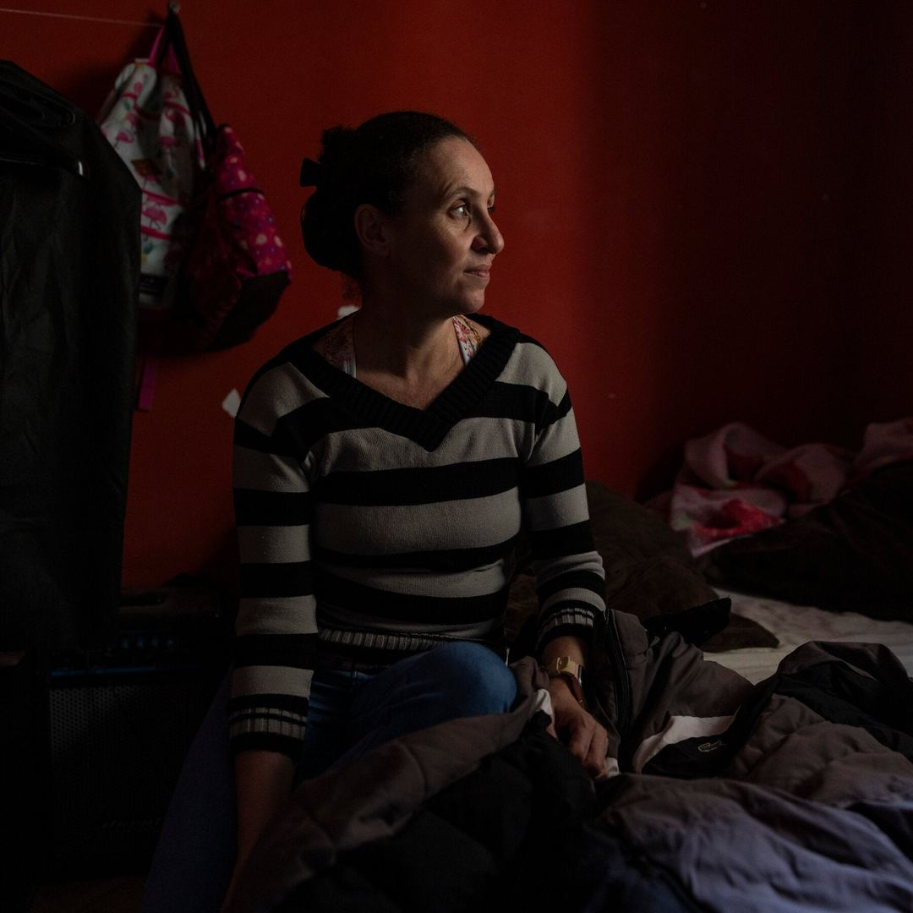
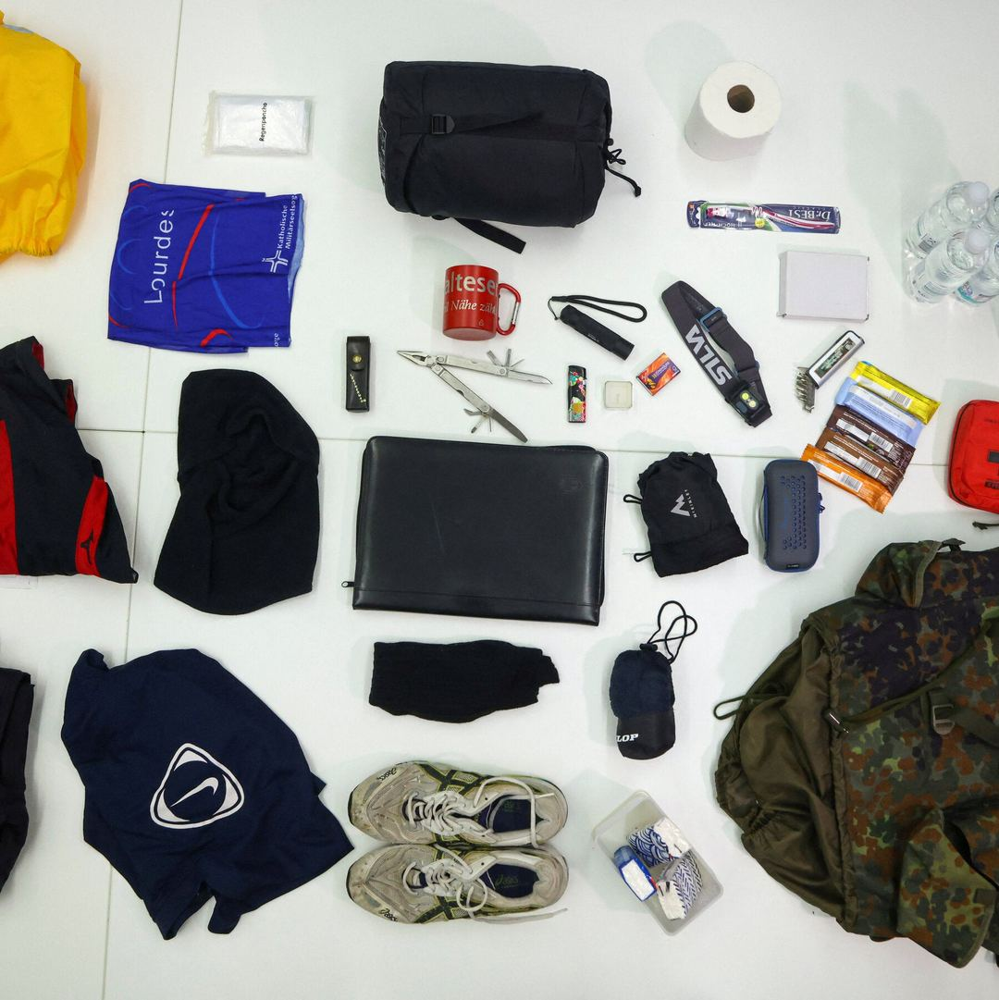